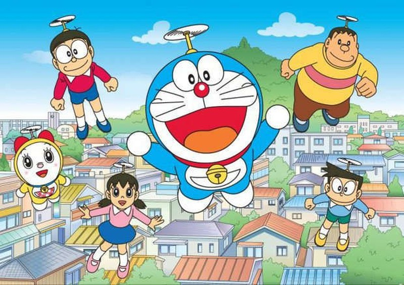

Mục lục truyện Doraemon
tập 1 - chương 1: Doraemon đã đến với Nobita như thế nào?
tập 1 - chương 3: Chạy trời không khỏi nắng
tập 1 - chương 6: trở về thời xa xưa
tập 1 - chương 9: Bóng thay người
tập 1 - chương 11: cây bút thần kỳ
tập 1 - chương 15: cây đèn thần